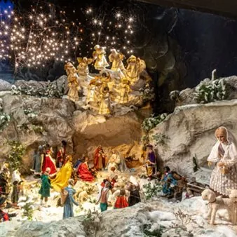

da mar 8 dic a dom 31 gen
La Magia del Natale - Presepe storico delle Suore Orsoline di Cividale del Friuli
Artistico e storico presepe collocato fin dalle sue origini negli spazi del monastero. Si compone di statuine con testa e mani in cera e corpo di stoppa, realizzate nella seconda metà dell'800 dalle Suore Orsoline nel silenzio della clausura, a rappresentare le persone che…
 Indicazioni
Indicazioni
- Costi e prenotazioni
- Costo non indicato · Prenotazione non indicata
- Programma
- Programma da verificare. Apri la fonte ufficiale per orari e possibili aggiornamenti.
- In caso di maltempo
- Nessuna indicazione specifica pubblicata.
- Note
- Acquisito automaticamente dalla fonte.
L’EVENTO
Descrizione completa
Artistico e storico presepe collocato fin dalle sue origini negli spazi del monastero. Si compone di statuine con testa e mani in cera e corpo di stoppa, realizzate nella seconda metà dell'800 dalle Suore Orsoline nel silenzio della clausura, a rappresentare le persone che animavano al tempo le vie e i mercati di Cividale.
DOVE
Monastero di Santa Maria in Valle e Tempietto Longobardo
(Patrimonio UNESCO)
Campanile della Chiesa di San Giovanni Battista
Via Monastero Maggiore, 34
QUANDO
Dall’08 dicembre 2026 al 31 gennaio 2027
Tutti i giorni escluso il Martedì
ore 10.00-13.00 e 14.00-17.00
Venerdì 25 dicembre 2026 CHIUSO
Venerdì 1° gennaio 2027 ore 14.00-17.00
Il presepe, nel periodo delle festività è visitabile gratuitamente; per tutto il restante corso dell’anno, rimane visitabile a pagamento (incluso nel bigliettodi ingresso per la visita al Monasterodi Santa Maria in Valle e al Tempietto Longobardo)
VIABILITÀ
Il sito presepiale si trova in una zona del centro a traffico limitato
I parcheggi si trovano a poche centinaia di metri e sono dotati di stalli per disabili
Possibilità di parcheggio per pullman in zona Autostazione
FAMILY EXPERIENCE
“Il Presepe delle Suore Orsoline e le sue storie”
Visita per adulti e bambini con laboratorio manuale per i più piccoli
Prenotazione obbligatoria ai numeri 0432 700867 e 0432 710460
IL PROGRAMMA
Programma e orari
Appuntamenti raccolti dalle fonti elencate. Dove manca un orario, non è ancora disponibile in questa scheda.
Programma pubblicato
- ore 10.00-13.00 e 14.00-17.00
INFORMAZIONI UTILI
Prima di partire
- Controllare la fonte prima di partire.
ORGANIZZAZIONE